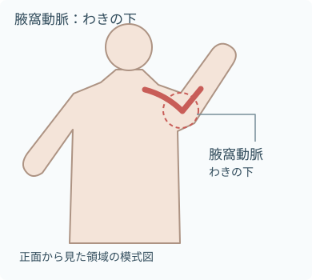
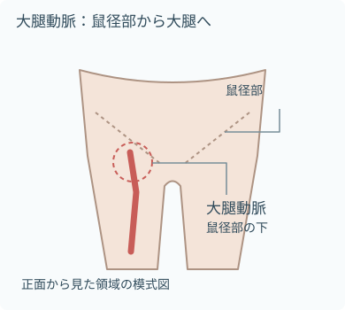

注意事項
患者を先に見る
- 数値や波形の変化だけで判断しない
- 照合する患者所見
- 意識
- 呼吸
- 皮膚
- 脈拍
- 値が疑わしいとき
- 回路を点検する。
- 必要時は非観血的血圧と比較する。
- 急な波形消失時に同時に確認すること
- 患者の循環
- カテーテル抜去
- 回路離断
動脈回路として扱う
- 回路とポートを明確に識別する
- 薬剤投与や静脈注射に使用しない
- 接続部を不用意に開放しない
- 気泡を患者側へ送らない
- 閉鎖式回路への出入りを最小限にする
- 不要になったカテーテルは速やかに抜去する
目的
- 動脈圧を連続的に測定
- 急速な循環変化を波形と数値で把握
- 頻回の動脈血採取に使用
- 治療・循環管理に必要な情報を得る
観察項目
患者
- 全身状態
- 意識
- 呼吸
- 皮膚色
- 冷汗
- 動脈圧と照合する情報
- 心拍数
- 心電図
- 非観血的血圧
- 値と推移
- 収縮期血圧
- 拡張期血圧
- 平均動脈圧
- 波形の確認
- 形
- 振幅
- ノッチ
- 呼吸性変動
挿入側の末梢循環
- 皮膚色の確認
- 皮膚色
- 蒼白
- チアノーゼ
- 温度の確認
- 皮膚温
- 左右差
- 毛細血管再充満時間
- 末梢動脈の触知
- 疼痛・感覚
- 疼痛
- しびれ
- 感覚の変化
- 運動機能
- 自動運動
- 筋力の変化
- 腫脹・出血
- 腫脹
- 出血
- 血腫
- 刺入部の変化
- 発赤
- 熱感
- 硬結
- 排液
カテーテルと測定回路
- カテーテルの確認
- 固定状態
- 抜け
- 屈曲
- 牽引
- ドレッシングの確認
- 湿潤
- 緩み
- 汚染
- 接続部の確認
- 緩み
- 漏れ
- 血液の逆流
- 回路内の確認
- 気泡
- 凝血
- 沈着物
- 活栓・キャップ
- 三方活栓の向き
- キャップ
- フラッシュ液の確認
- 種類
- 残量
- 使用期限
- 加圧バッグの圧
- 300 mmHgは一般的な製品設定。
- 採用製品の取扱説明書を優先する。
- トランスデューサ
- 高さ
- 固定
- モニタ
- アラーム設定
- 波形表示
挿入介助・回路準備
必要物品
- 動脈カテーテル
- 圧トランスデューサセット
- 圧モニタケーブル
- 加圧バッグ
- 指示されたフラッシュ液
- 点滴スタンド
- 皮膚消毒薬
- 滅菌手袋
- マスク
- 帽子
- 滅菌穴あきドレープ
- 滅菌ガーゼ
- 透明ドレッシング材
- 固定用具
- ラベル
- 鋭利物廃棄容器
- 必要時、超音波診断装置
- 挿入部位と方法で必要物品は変わる。
- 大腿・腋窩動脈では最大限の滅菌バリアを用いる。
挿入部位を理解する

- 手関節の母指側を通る。
- Aラインの挿入に多く用いられる部位。
- 留置後に観察する手指の状態
- 血流
- 感覚
- 運動

- わきの下を通る動脈。
- 挿入では最大限の滅菌バリアを用いる。
- 留置側の上肢の末梢循環を観察する。

- 鼠径部の下から大腿へ続く動脈。
- 挿入では最大限の滅菌バリアを用いる。
- 留置側の下肢で観察すること
- 末梢循環
- 出血
- 血腫
- 図は部位を理解するための領域の模式図で、穿刺点・深さ・針の方向を示していない。
- 挿入部位の選択は患者の状態と術者の評価による。
- 実際の血管位置は個人差があり、図だけで判断しない。
手順
- 指示と患者を確認確認項目
- 目的
- 挿入部位
- 出血リスク
- アレルギー
- 末梢循環
- 必要な検査
- 患者へ説明説明すること
- 目的
- 体位
- 動かし方
- 疼痛やしびれを伝えること
- 回路をプライミング
- 無菌操作でフラッシュ液を接続。
- バッグと回路から空気を除き、全経路を液で満たす。
- 加圧・接続準備
- 採用製品の設定へ加圧する。
- 300 mmHgは一般的だが、取扱説明書を優先する。
- 接続部を締め、ポートを閉じる。
- 挿入を介助
- 手指衛生と無菌操作を守る。
- 介助中の観察
- 循環
- 疼痛
- しびれ
- 必要物品を清潔に受け渡す。
- 回路を接続
- 術者の指示で、空気がないことを再確認して接続する。
- 三方活栓を患者側へ開く。
- 固定・表示
- 刺入部を観察できるよう固定する。
- 牽引を避け、動脈回路と分かるよう表示する。
- ゼロ点校正
- 基準点に高さを合わせ、大気開放でゼロを取る。
- 患者側へ戻して波形と数値を確認する。
- 終了時の観察終了時に確認・記録する項目
- 末梢循環
- 出血
- 固定
- 接続
- 気泡
- 加圧
- 波形
- アラーム
ゼロ点校正
必要物品
- 接続済みの圧トランスデューサ
- モニタ
- 基準点を確認する水平器または院内指定器具
- 非通気性キャップ
手順
- 体位を確認
- 血圧を評価する体位を整える。
- 患者とトランスデューサの位置関係を確認する。
- 基準の高さへ合わせる
- 通常の全身動脈圧では、トランスデューサの大気開放点を右心房レベルへ合わせる。
- 患者側を閉じる
- 三方活栓を患者側に閉じ、大気側へ開く。
- 患者を大気へ開放しない。
- ゼロを実行
- モニタのゼロ操作を行う。
- ゼロ操作後に確認すること
- 0 mmHg
- 平坦な波形
- 患者側へ戻す
- 大気側を閉じ、患者側へ開く。
- キャップを装着する。
- 測定を確認
- 波形と数値が戻ることを確認する。
- 照合する情報
- 患者所見
- 非観血的血圧
- 回路状態
- 体位やベッド高が変わったら基準点を再確認。
- 脳灌流圧など測定目的が異なる場合は、指示された基準点を使う。
Aラインからの採血
必要物品
- 検査指示
- 患者識別ラベル
- 採用回路専用の採血器具
- 必要な採血容器
- 未滅菌手袋
- 院内指定の消毒綿
- 清潔なガーゼ
- 感染性廃棄物容器
手順
- 指示と回路を確認採血前の確認
- 検査
- 必要量
- 採血ポート
- 閉鎖式採血システムの操作方法
- 本人確認と説明
- 複数の識別情報で本人確認する。
- 患者へ説明すること
- 目的
- 操作
- 手指衛生・手袋
- 清潔な作業面を作る。
- 採血前の安全確認
- 回路の接続
- 気泡
- 加圧
- 末梢循環
- 採血ポートを消毒
- 採用製品と院内手順に従って摩擦消毒する。
- 消毒後、乾燥させる。
- 検体を採取
- 死腔血の扱いと採取順は採血システムに従う。
- 回路を開放したままにしない。
- 回路を戻す
- 閉鎖式システムの手順で血液を処理し、フラッシュする。
- 血液の残留と気泡がないことを確認する。
- 再評価採血後の確認
- 三方活栓
- キャップ
- 波形
- 数値
- 加圧
- 刺入部
- 末梢循環
- 表示・搬送・記録記録する項目
- 採取時刻
- 採取源が動脈ラインであること
- 必要事項
検体は速やかに提出する。
- システムごとに確認すること
- 死腔量
- 廃棄量
- 返血の可否
- フラッシュ方法
- 汚染した血液や閉鎖性を失った血液を回路へ戻さない。
測定回路の交換
必要物品
- 新しい圧トランスデューサセット
- 新しい加圧バッグ
- 指示されたフラッシュ液
- 未滅菌手袋
- 院内指定の消毒綿
- 非通気性キャップ
- ラベル
- 感染性廃棄物容器
手順
- 交換条件を確認交換条件の確認
- 交換時期
- 回路
- フラッシュ液
- 採用製品の手順
- 新回路を準備
- 無菌操作で接続し、バッグと回路内の空気を完全に除去する。
- 指定圧へ加圧する。
- 患者側を閉じる
- 患者に最も近い指定箇所で流路を遮断する。
- 患者側を大気へ開放しない。
- 接続部を交換
- 接続部を消毒して乾燥。
- 新回路を無菌的に接続し、緩みがないことを確認する。
- 患者側へ開く
- 流路を正しい向きへ戻す。
- ないことを確認する異常
- 血液逆流
- 漏れ
- 気泡
- ゼロ点と波形を確認
- トランスデューサを基準高へ合わせてゼロ点校正する。
- 交換後の確認
- 波形
- 数値
- 末梢循環
- 表示・記録記録する項目
- 交換日時
- 回路
- フラッシュ液
- 観察結果
抜去介助
必要物品
- 未滅菌手袋
- 必要時、固定材剥離剤
- 皮膚消毒薬
- 滅菌ガーゼ
- 止血用ドレッシング材
- 廃棄物容器
手順
- 指示と出血リスクを確認抜去前の確認
- 抜去指示
- 凝固状態
- 抗凝固薬
- 抗血小板薬
- 刺入部
- 末梢循環
- 本人確認と説明説明すること
- 抜去
- 圧迫止血
- 安静
- 出血時の伝え方
- 体位と物品を整える
- 安全に圧迫できる体位にする。
- 廃棄物容器を手元へ置く。
- 固定を外す
- 手指衛生と手袋装着。
- 皮膚を傷つけず、カテーテルを引っ張らないよう固定材を外す。
- 抜去・圧迫
- 指示された方法で抜去。
- 滅菌ガーゼで直接圧迫し、完全に止血するまで続ける。
- カテーテルを確認
- 抜去したカテーテルが完全か確認する。
- 異常時は直ちに報告する。
- 被覆する
- 止血を確認してドレッシング材を貼付。
- 止血器具の使用時間は製品説明書と院内手順に従う。
- 再観察・記録抜去後の確認
- 再出血
- 血腫
- 疼痛
- 皮膚色
- 温度
- 感覚
- 運動
- 末梢脈拍
抜去時刻と結果を記録する。
関連知識
測定回路のつながり
- 血管内の圧変化が、液で満たした硬い回路を通る。
- トランスデューサで電気信号に変わる。
確認は次の順に回路全体をたどる。
- 患者
- カテーテル
- 採血ポート
- 気泡
- 接続
- トランスデューサ
- 加圧
- モニタ
- 図は接続関係の模式図で、実際の製品配置や操作順を示すものではない。
動脈圧波形とダンピング
- 過減衰は収縮期を低く、拡張期を高く表示しやすい。
- 不足減衰はその逆。
- 原因を除き、正しい波形で再評価する。
- 過減衰で確認する原因
- 気泡
- 凝血
- 屈曲
- 閉塞
- 接続不良
- 加圧不足
- 不足減衰で確認する原因
- 硬すぎる回路
- 回路構成
- カテーテルの動き
- 共振
- 波形消失時の確認
- 患者の循環
- 抜去
- 離断
- 活栓
- 屈曲
- 凝血
- ケーブル
- モニタ設定
- 高速フラッシュテストは、適応と操作を理解した者が採用製品・院内手順に従って行う
トランスデューサの高さで値が変わる
- 基準点より低い：表示圧は高くなる
- 基準点より高い：表示圧は低くなる
- 高さ10 cmのずれで、約7.5 mmHgの差が生じる
- 高さを再確認するタイミング
- 体位変換後
- ベッド高変更後
- 移動後
- 通常の全身動脈圧は右心房レベルを基準にする
- 脳灌流圧など目的が異なる場合は指示された基準点を使う
主な合併症
- 出血・失血
- 主な原因
- 抜去
- 離断
- 接続部の緩み
- 活栓の誤操作
- 血栓・末梢虚血
- 主な徴候
- 疼痛
- 蒼白
- 冷感
- しびれ
- 脈拍低下
- 毛細血管再充満遅延
- 感染
- 主な徴候
- 発赤
- 熱感
- 腫脹
- 疼痛
- 排液
- 発熱
- 血腫
- 主な発生場面・原因
- 刺入時
- 固定不良
- 抜去後の止血不十分
- 空気塞栓
- 主な原因
- 回路の開放
- 回路の離断
- 気泡を含む回路のフラッシュ
- 誤注入
- 動脈回路を静脈ラインと誤認し、薬剤などを注入する事故。
交換時期と感染対策
- 動脈カテーテルは定期交換せず、臨床的な適応で交換
- 不要になったら速やかに抜去
- CDCはトランスデューサを96時間間隔で交換し、次の構成品も同時交換するよう推奨する。
- チューブ
- 持続フラッシュ器具
- フラッシュ液
- 回路構成と交換時期は、最新の院内手順と製品説明書も確認
- すべての構成品の無菌性を保ち、操作回数を減らす
- ドレッシングを交換する状態
- 湿潤
- 緩み
- 汚染
出典
- CDC「Summary of Recommendations: Peripheral Arterial Catheters and Pressure Monitoring Devices」
- CDC「Strategies for Prevention of Catheter-Related Infections」
- Edwards Lifesciences「Pressure Monitoring Kit: Instructions for Use」
- Saugel B, et al.「How to measure blood pressure using an arterial catheter: a systematic 5-step approach」
- German Society of Anaesthesiology and Intensive Care Medicine「Intraoperative haemodynamic monitoring and management」